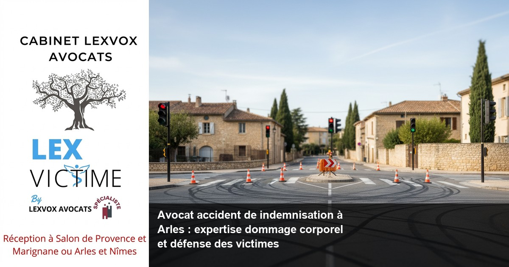

Accident de la route — Arles
Avocat accident mortel de la route à Arles : indemnisation des proches

— Par Me Patrice Humbert, avocat au barreau d'Aix-en-Provence
Vous cherchez un avocat accident de indemnisation à Arles suite à un accident de la route mortel ? Maître Patrice Humbert du Cabinet LEXVOX AVOCATS vous accompagne dans votre procédure d'indemnisation avec plus de 20 ans d'expérience exclusive en dommage corporel. Premier avocat certifié IA de France, il défend vos droits pour obtenir une réparation intégrale. Consultation gratuite 30 minutes au 04 90 54 58 10.
Obtenir la meilleure indemnisation possible : indemnisation des victimes et droit du dommage corporel à Arles
Les enjeux d'une indemnisation après accident mortel
Un accident de la route mortel bouleverse la vie des proches de la victime. Face à cette tragédie, l'indemnisation des victimes devient un enjeu crucial pour permettre aux familles de surmonter les difficultés financières et morales qui s'imposent. Le droit du dommage corporel offre un cadre juridique précis pour obtenir une réparation intégrale des préjudices subis.
À Arles, ville étendue traversée par des axes routiers majeurs comme l'A54, la RN113 et la RN572, les accidents de la route mortels concernent malheureusement de nombreuses familles chaque année. Selon l'expérience du cabinet (20+ ans, centaines de dossiers), chaque situation nécessite une approche personnalisée pour défendre efficacement les droits des victimes.
Comprendre vos droits en matière d'indemnisation
L'indemnisation préjudice corporel repose sur le principe de réparation intégrale. Cela signifie que l'ensemble de vos préjudices doit être pris en compte et indemnisé. Dans le cas d'un accident mortel, plusieurs catégories de préjudices peuvent être invoquées :
- Les préjudices économiques (perte de revenus, frais funéraires, perte de gains professionnels futurs)
- Les préjudices moraux (souffrance des proches, préjudice d'affection)
- Les préjudices patrimoniaux (perte du soutien de famille)
Un avocat spécialiste en droit du dommage corporel maîtrise parfaitement ces différents postes de préjudice. Son expertise permet d'évaluer précisément l'impact de l'accident sur votre situation personnelle et familiale.
L'importance de l'expertise dans votre dossier
L'expertise médicale et technique constitue un élément déterminant de votre procédure d'indemnisation. Même dans le cas d'un accident mortel, l'expertise permet d'établir les circonstances exactes du décès et d'évaluer les souffrances endurées par la victime avant son décès.
À Arles, près du Centre hospitalier Joseph Imbert, notre cabinet travaille régulièrement avec des experts reconnus qui comprennent les enjeux médicaux et techniques de votre dossier. Cette collaboration permet d'obtenir des rapports d'expertise favorables à votre indemnisation.
Accompagner par un avocat : un accident de la route et faire appel à un avocat à Arles
Pourquoi choisir un avocat spécialisé ?
Suite à un accident de la route mortel, faire appel à un avocat spécialisé en dommage corporel s'avère indispensable. Un avocat expérimenté connaît parfaitement les rouages de la procédure d'indemnisation et sait comment défendre efficacement vos intérêts face aux compagnies d'assurance.
L'avocat spécialisé en indemnisation possède une connaissance approfondie du référentiel Dintilhac, qui sert de base à l'évaluation des préjudices. Il maîtrise également la jurisprudence récente, notamment celle développée par nos confrères à Paris et Bordeaux, qui influence l'évolution des barèmes d'indemnisation.
L'accompagnement personnalisé du Cabinet LEXVOX
Au sein du cabinet LEXVOX AVOCATS, l'accompagner par un avocat signifie bénéficier d'un suivi personnalisé à chaque étape de la procédure. Depuis notre bureau d'Arles, nous intervenons également à Aix-en-Provence, Salon-de-Provence, Marignane et Marseille pour défendre les victimes d'accidents.
Notre approche se caractérise par :
- Une écoute attentive de votre situation personnelle
- Une analyse juridique approfondie de votre dossier
- Une stratégie adaptée pour obtenir la meilleure indemnisation possible
- Un accompagnement durant toute la procédure
La valeur ajoutée de l'expérience
Avec plus de 20 ans d'expérience exclusive en dommage corporel, Maître Patrice Humbert a développé une expertise reconnue dans la défense des victimes d'accidents. Cette expérience permet d'anticiper les arguments de l'assurance et de construire un dossier solide pour votre indemnisation.
L'expertise acquise au fil des années permet également de négocier efficacement avec les compagnies d'assurance, qui connaissent notre réputation et notre détermination à défendre les droits des victimes jusqu'au bout.
Expert en indemnisation : défense des victimes et réparation intégrale à Arles
L'expertise technique au service des victimes
Un expert en indemnisation maîtrise tous les aspects techniques du dommage corporel. Cette expertise englobe la connaissance des barèmes d'indemnisation, l'évaluation des préjudices et la stratégie procédurale la plus adaptée à chaque situation.
Dans le domaine des accidents mortels, l'expertise permet notamment de :
- Évaluer précisément le préjudice économique subi par les ayants droit
- Déterminer le montant du préjudice moral et d'affection
- Calculer la perte de revenus futurs selon l'âge et la profession de la victime
- Négocier une indemnisation juste avec l'assureur
La spécialisation CNB : un gage de qualité
La spécialisation CNB (Conseil National des Barreaux) en dommage corporel représente la plus haute reconnaissance professionnelle dans ce domaine. Cette certification, obtenue après examen et validation par les pairs, garantit un niveau d'expertise exceptionnel.
Maître Patrice Humbert, titulaire de cette spécialisation, fait partie des rares avocats reconnus experts dans ce domaine complexe. Cette reconnaissance officielle constitue un atout majeur pour la défense de vos intérêts et l'obtention d'une réparation intégrale.
L'innovation technologique au service du droit
Premier avocat certifié IA de France, Maître Humbert utilise les technologies les plus avancées pour optimiser la défense des victimes. Cette innovation permet :
- Une analyse plus précise des dossiers complexes
- Une veille jurisprudentielle constante
- Une optimisation des stratégies d'indemnisation
- Un gain de temps qui profite directement aux clients
Cette approche innovante, combinée à l'expérience traditionnelle, offre aux victimes d'accidents un service juridique de nouvelle génération, particulièrement adapté aux défis contemporains de l'indemnisation.
Accident de la vie : avocat de victimes et avocat spécialisé à Arles
Comprendre les accidents de la vie
Les accidents de la vie regroupent l'ensemble des événements traumatisants qui peuvent survenir dans l'existence : accidents de la route, accidents médicaux, accidents domestiques, agressions, etc. Chaque type d'accident nécessite une approche spécifique pour obtenir une indemnisation adaptée.
Un avocat de victimes comprend l'impact psychologique et social de ces événements sur les personnes concernées. Cette compréhension globale permet d'identifier tous les préjudices, y compris ceux qui ne sont pas immédiatement apparents mais qui méritent indemnisation.
L'approche humaine de la défense des victimes
Défendre les victimes d'accidents nécessite avant tout une approche humaine et empathique. Chaque dossier raconte une histoire personnelle, avec ses spécificités et ses enjeux particuliers. Un avocat spécialisé sait adapter son approche à chaque situation pour offrir le soutien juridique et humain nécessaire.
Cette dimension humaine se traduit par :
- Une écoute attentive des difficultés rencontrées
- Un accompagnement psychologique informel
- Une explication claire des enjeux juridiques
- Un soutien constant durant la procédure
Les accidents médicaux : une expertise particulière
Les victimes d'erreurs médicales constituent une catégorie spécifique nécessitant une expertise approfondie. Les métiers de la santé étant soumis à des règles déontologiques strictes, l'indemnisation des accidents médicaux suit des procédures particulières.
La loi du 4 mars 2002 relative aux droits des malades et à la qualité du système de santé a considérablement modifié le paysage de l'indemnisation médicale. Cette loi permet notamment aux victimes d'obtenir une indemnisation même en l'absence de faute médicale établie.
Une maladie infectieuse contractée lors d'un séjour hospitalier peut également donner lieu à indemnisation dans certaines conditions. L'expertise médicale devient alors cruciale pour établir le lien de causalité entre l'infection et les soins dispensés.
Une indemnisation : assurance et expertise à Arles
Le rôle central de l'assurance
Obtenir une indemnisation passe généralement par la négociation avec une compagnie d'assurance. Ces entreprises disposent de services spécialisés et de médecins-conseils expérimentés pour évaluer les dossiers d'indemnisation selon leurs propres critères.
Face aux compagnies d'assurance, la présence d'un avocat spécialisé rééquilibre le rapport de force. L'assureur sait qu'il ne pourra pas minimiser l'indemnisation face à un professionnel qui maîtrise parfaitement ses droits et ses arguments.
L'expertise médicale contradictoire
L'expertise médicale constitue souvent l'étape décisive de votre indemnisation. Cette expertise, menée par un médecin expert indépendant, évalue l'ensemble de vos préjudices corporels et leurs conséquences sur votre vie quotidienne.
L'assistance d'un avocat lors de cette expertise s'avère particulièrement précieuse. Il peut :
- Vous préparer aux questions de l'expert
- Poser les bonnes questions durant l'expertise
- Contester un rapport défavorable
- Demander une contre-expertise si nécessaire
La négociation amiable : une étape décisive
La plupart des dossiers d'indemnisation trouvent une solution par voie amiable, sans procès. Cette négociation nécessite une préparation minutieuse et une stratégie adaptée pour aboutir à une indemnisation satisfaisante.
Un avocat expert en négociation sait présenter votre dossier sous son meilleur jour et argumenter chaque poste de préjudice. Son expérience lui permet également d'évaluer la justesse des propositions d'indemnisation et de négocier les montants à la hausse.
Préjudice et honoraire : votre avocat à Arles
Comprendre la structure des honoraires
Le cabinet LEXVOX AVOCATS pratique une politique tarifaire transparente et adaptée à votre situation. Nos honoraires comprennent :
- Une part fixe à partir de 700 euros HT pour la constitution du dossier
- Une part de résultat de 10 à 15% de l'indemnisation obtenue
- Aucun frais en cas d'échec de la procédure
Cette structure garantit un alignement parfait entre nos intérêts et les vôtres : nous ne sommes rémunérés qu'en cas de succès de votre dossier.
L'évaluation des différents préjudices
Chaque poste de préjudice doit être évalué précisément pour obtenir une indemnisation juste. Dans le cas d'un accident mortel, les principaux préjudices concernent :
Pour les proches de la victime :- Préjudice moral (souffrance liée au décès)
- Préjudice d'affection (perte de l'être cher)
- Préjudice économique (perte de revenus du foyer)
- Préjudice d'accompagnement (frais d'obsèques, démarches)
- Souffrances endurées avant le décès
- Préjudice esthétique temporaire
- Perte de revenus entre l'accident et le décès
L'optimisation de votre indemnisation
Un médecin-conseil de victimes peut également intervenir dans votre dossier pour contester l'expertise de l'assurance. Cette démarche permet souvent d'obtenir une réévaluation favorable de vos préjudices.
L'objectif reste toujours le même : permettre à la victime ou à ses proches d'obtenir une réparation des dommages corporels qui reflète fidèlement la réalité de leur situation et de leurs besoins.
Procédure d'indemnisation à Arles : les étapes avec LEXVOX AVOCATS
Première étape : l'analyse de votre dossier
Dès notre première rencontre, nous analysons minutieusement les circonstances de l'accident et ses conséquences. Cette analyse comprend :
- L'étude du rapport de police
- L'examen des certificats médicaux
- L'évaluation des responsabilités
- L'identification de tous les préjudices
Cette phase d'analyse détermine la stratégie la plus adaptée à votre situation et permet d'estimer le montant potentiel de votre indemnisation.
Deuxième étape : la constitution du dossier
La constitution d'un dossier solide nécessite de rassembler l'ensemble des pièces justificatives : bulletins de salaire, factures, attestations, témoignages, etc. Chaque document contribue à étayer votre demande d'indemnisation.
Notre expérience nous permet d'identifier rapidement les pièces manquantes et de vous orienter dans vos démarches. Cette préparation minutieuse constitue le socle de votre future indemnisation.
Troisième étape : l'expertise médicale
L'expertise médicale représente un moment clé de votre procédure. Nous vous accompagnons systématiquement lors de cette expertise pour défendre vos intérêts et nous assurer que l'expert prend bien en compte l'intégralité de vos préjudices.
Cette assistance technique permet souvent d'améliorer significativement le contenu du rapport d'expertise, avec un impact direct sur le montant de votre indemnisation.
Quatrième étape : la négociation

Vos questions sur avocat accident de indemnisation à arles : expertise dommage
Qui peut demander une indemnisation après un accident mortel ?
Les ayants droit de la victime peuvent demander une indemnisation : conjoint, enfants, parents, et toute personne qui avait un lien particulier avec la victime décédée. Chaque cas nécessite une analyse spécifique selon les circonstances de l'accident et les liens familiaux.
Quel est le délai pour demander une indemnisation ?
Le délai de prescription est généralement de 10 ans à compter de la date de l'accident. Cependant, il est fortement conseillé d'entreprendre les démarches le plus rapidement possible pour préserver vos droits et faciliter la reconstitution des faits.
Comment se calcule l'indemnisation d'un accident mortel ?
L'indemnisation dépend de plusieurs facteurs : âge de la victime, revenus, situation familiale, circonstances du décès. Chaque poste de préjudice est évalué individuellement pour déterminer le montant global de l'indemnisation.
Faut-il obligatoirement passer par un avocat ?
Bien que non obligatoire, l'assistance d'un avocat spécialisé est vivement recommandée. Les enjeux financiers sont importants et les procédures complexes. Un avocat expérimenté optimise significativement votre indemnisation.
Que se passe-t-il si l'assurance refuse de nous indemniser ?
En cas de refus ou d'offre insuffisante de l'assurance, nous pouvons saisir le tribunal compétent pour faire valoir vos droits. Le Tribunal judiciaire de Tarascon est compétent pour les dossiers concernant Arles.
Combien coûte un avocat spécialisé en dommage corporel ?
Notre cabinet pratique une tarification mixte : honoraires fixes + pourcentage du résultat. Cette formule vous garantit un service de qualité sans risque financier en cas d'échec de la procédure.
Synthèse : votre droit à la réparation intégrale ?
Le droit du dommage corporel garantit à chaque victime d'un accident le droit à une réparation intégrale de ses préjudices. L'indemnisation préjudice corporel nécessite l'intervention d'un avocat spécialiste qui maîtrise parfaitement cette matière complexe. En tant que victime d'un accident, vous devez pouvoir compter sur une indemnisation intégrale qui prenne en compte tous vos préjudices, qu'ils soient économiques, moraux ou physiques. L'indemnisation accident suit une procédure précise où chaque étape compte. Pour obtenir une indemnisation satisfaisante, il est essentiel de comprendre que l'arrêt de travail, les séquelles et l'impact sur votre vie quotidienne constituent autant d'éléments à valoriser. La réparation du dommage corporel repose sur une évaluation précise de chaque poste de préjudice, ce qui nécessite d'accompagner par un avocat expérimenté qui connaît parfaitement les droits des victimes. Un avocat spécialisé en indemnisation sait comment défendre efficacement vos intérêts et obtenir la meilleure indemnisation possible. Son rôle d'avocat expert consiste à défendre les victimes face aux compagnies d'assurance qui tentent souvent de minimiser les indemnisations. Faire appel à un avocat suite à un accident s'avère donc indispensable, car la présence d'un médecin-conseil de victimes peut également s'avérer nécessaire pour contester les expertises défavorables. Chaque poste de préjudice doit être évalué pour garantir une indemnisation juste. Les indemnisations concernent aussi bien les accidents de la route que les accidents de la vie en général. Une indemnisation complémentaire peut parfois être obtenue selon les circonstances particulières de votre dossier. Les victimes d'accidents de la route bénéficient d'une protection particulière, mais qu'un accident survienne en ville ou sur autoroute, la détermination du responsable de l'accident influera sur votre indemnisation. Face à une compagnie d'assurance, la défense des victimes d'accidents nécessite une stratégie adaptée. Chaque victime d'accident mérite une attention particulière, car les circonstances de l'accident déterminent la procédure d'indemnisation la plus appropriée. Les victimes d'accident peuvent compter sur notre expertise pour chaque cas d'accident, qu'il s'agisse d'un dommage matériel ou corporel. L'assistance d'un avocat garantit que l'indemnisation d'un accident reflète la réalité des préjudices subis. Les victimes d'accidents, comme les victimes d'accidents de la route, méritent toutes une défense acharnée de leurs droits. Nous intervenons également pour les victimes d'erreurs médicales qui nécessitent une approche spécialisée des métiers de la santé.
Procédure d'indemnisation à Arles : les étapes avec LEXVOX ?
Première consultation gratuite — 30 min
Besoin d'un avocat spécialisé à Arles ? Nous évaluons votre dossier gratuitement et vous indiquons vos droits à réparation.
Cabinet LEXVOX AVOCATS — Me Patrice Humbert — Spécialisation CNB dommage corporel — Bureaux à Aix-en-Provence, Salon-de-Provence, Arles et Marignane